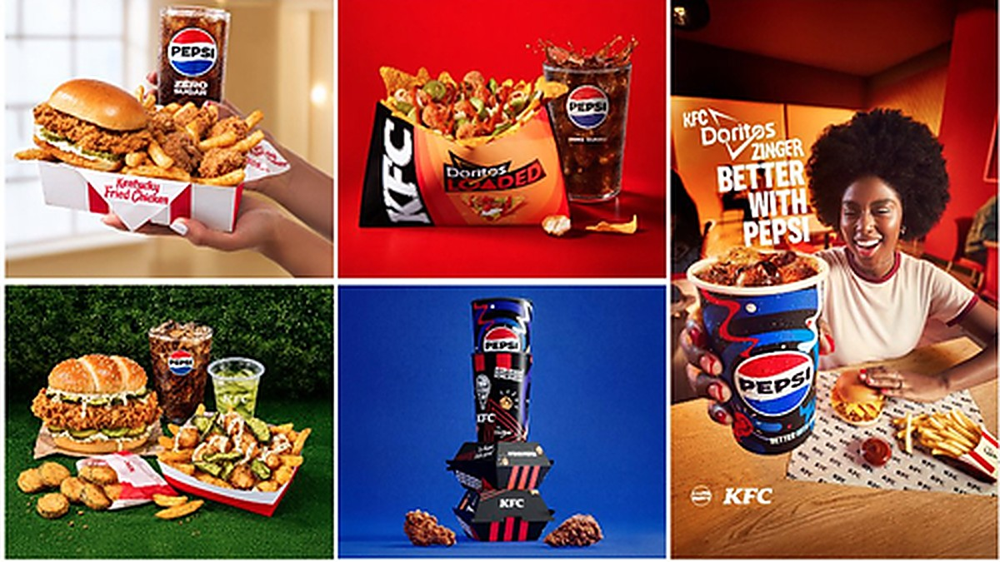

Geschäft

PepsiCo bleibt Getränkepartner von KFC in acht Märkten, darunter Deutschland, nachdem KFC in den USA zu Coca-Cola wechselte
$PEP
PepsiCo hat die Partnerschaft mit KFC in Australien, Indien, Großbritannien, Spanien, Deutschland, Frankreich, den Niederlanden und Belgien verlängert. In den USA hatte sich KFC zuvor für Coca-Cola entschieden.

PepsiCo hat die Partnerschaft mit der Fast-Food-Kette KFC in mehreren Auslandsmärkten verlängert. Laut Pressemitteilung vom 6. November 2026 bleibt PepsiCo der bevorzugte Getränkepartner (“beverage partner of choice”) für KFC-Restaurants in Australien, Indien, Großbritannien, Spanien, Deutschland, Frankreich, den Niederlanden und Belgien. Dazu kommen Märkte in Nahost, Europa, Asien-Pazifik und Lateinamerika, in denen PepsiCo-Marken schon jetzt ausgeschenkt werden.
Verlängerung nach dem Verlust des US-Geschäfts
Die Meldung folgt auf einen Rückschlag: Im Oktober hatte sich KFC in den USA nach fast 40 Jahren für Coca-Cola als Getränkelieferant entschieden. Die Verlängerung in den acht Märkten sichert PepsiCo damit einen wichtigen Teil des internationalen Geschäfts mit der Kette. Zu Laufzeit und finanziellem Umfang macht die Mitteilung keine Angaben.
Getränke und Doritos Loaded
Beide Seiten wollen das Angebot an örtliche Geschmäcker anpassen und vor allem jüngere Kunden ansprechen. Zu den Getränken zählen laut Mitteilung unter anderem Pepsi Zero Sugar, Pepsi Max, Lipton Peach Iced Tea und 7UP, je nach Markt. Dazu kommt das gemeinsam entwickelte Gericht Doritos Loaded: knusprige Hähnchenstreifen von KFC mit Doritos-Chips und Toppings im mexikanischen Stil, nur in ausgewählten Märkten.
Eugene Willemsen, bei PepsiCo Chef des internationalen Getränkegeschäfts, sagte, KFC gewinne in seinen internationalen Märkten an Schwung. PepsiCo erzielte nach eigenen Angaben 2025 einen Nettoumsatz von knapp 94 Milliarden US-Dollar.
Dieser Beitrag fasst die genannte Pressemitteilung in eigenen Worten zusammen. Alle Angaben ohne Gewähr.
Quelle: Pressemitteilung PepsiCo (PR Newswire)
Hinweis: Dieser Text dient der allgemeinen Information und ist weder Anlage-, Steuer- noch Rechtsberatung. Kapitalanlagen sind mit Risiken verbunden, bis hin zum Totalverlust.